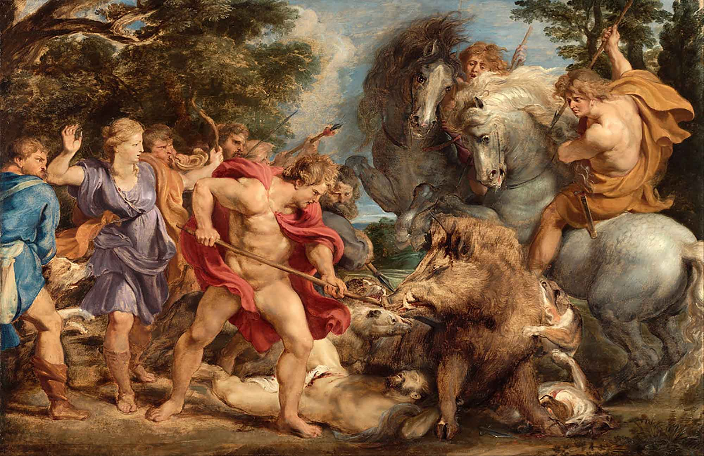
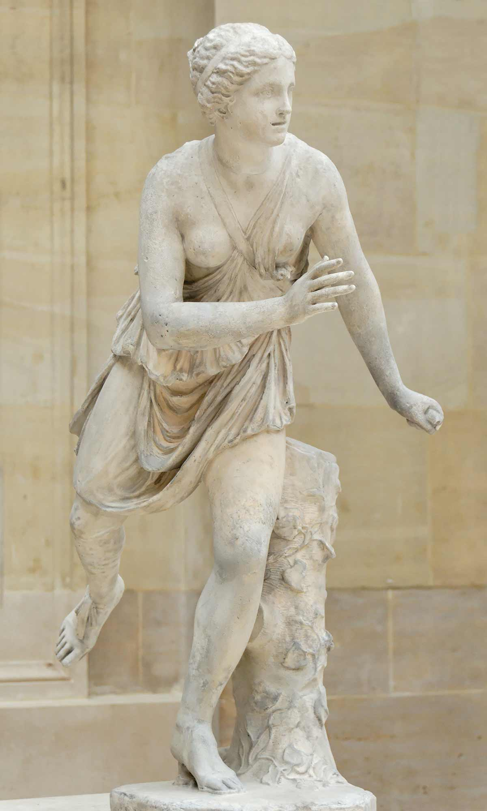

Early Life
Atalanta was born in Acadia to a king and queen who were very displeased that they’d had a daughter. Rather than raising her as a boy as many tended to do, the king opted to abandon infant Atalanta on a mountaintop to die. Luckily, she was soon found and taken in by a mother bear, who raised her as her own cub. Later, Atalanta was found and returned to civilization by a band of hunters who decided to raise her as their own. With the influences from her childhood, Atalanta grew up to be a brilliant athlete and expert huntress, budling her reputation through exploits such as beating King Peleus in a wrestling match, killing some centaurs who were being particularly crude in her direction, and possibly riding on the voyage of the Argonauts.
The Boar Hunt
Later in her life, Atalanta stared in her first major myth, as a part of the Calydonian boar hunt. In the nearby kingdom of Calydon, King Oeneus failed to honour Artemis during their annual harvest festival and was punished for this with a giant monster boar sent by the goddess to terrorize the land. A call was put out to anyone willing to come fight the monster, with its skin and tusk offered as a reward to the hunter who succeeded in killing it. Among the men who gathered for the hunt, was Atalanta, much to the displeasure of the other hunters. It was the Calydonian prince, Meleager, who insisted they accept the fact that she was to join them. In the end, they were the two successful in taking the boar down, Atalanta drawing first blood, which allowed Meleager to make the killing blow. Despite the other hunters trying to pass all the credit to Meleager, he insisted that for getting the first hit, Atalanta deserved it and he awarded her the prize. Unfortunately, the men hunting with them are none too pleased about this and try to bully Atalanta into leaving so they can take credit for the kill. They do not succeed and after a fight, end the adventure dead and Atalanta is recognized as the huntress who killed the Calydonian boar.
The Footrace
After the boar hunt, Atalanta grew in fame, attracting many suitors despite her general distaste for men. In an effort to manage the issue in a more socially acceptable way than simply murdering all of them, she proposed a contest: any man who could beat her in a footrace would win her hand in marriage. Those who lost the race, would be killed. The catch dissuaded many, but somehow not all. Those it didn’t scare off were easily outrun and promptly killed, as Atalanta was one of the fastest mortals in the world. However, suitors kept coming, kept racing, and kept dying. Until one day, a young man named Hippomenes came to race. Hippomenes was smart and kind and attractive, and also had called in the help of Aphrodite, who had given him three golden apples. As they raced, Hippomenes threw the golden apples behind them, inciting Atalanta to go after them and subsequently lose the race. Some interpretations of the myth suggest that Atalanta went after the apples as a way of letting Hippomenes win, rather than being genuinely unable to resist them, which I would argue is by far the better interpretation.
Fast Facts
- “Atalanta” comes from the Greek “atalantos” meaning “equal weight.”
- Depending on the telling, Atalanta is sometimes listed as having been aboard the Argo with Jason.
- Atalanta once beat king Peleus (Father of Achilles) in a wrestling match.
- She once shot some centaurs for catcalling her.
- In some tellings, after banging in one of his temples, Zeus turns Atalanta and Hippomenes into lions. This was considered particularly cruel because at the time, everyone thought that lions only mated with leopards and not with other lions.